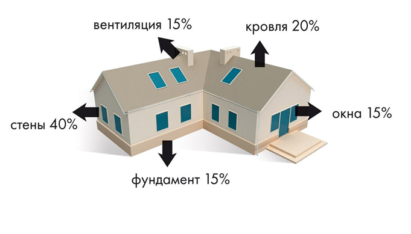

Одним из ключевых факторов, определяющих энергоэффективность зданий, является конструкция стен. Стены составляют значительную часть ограждающих конструкций дома, и через них происходит большая часть теплопотерь. Согласно исследованиям, на стены домов приходится 35-40% от общих теплопотерь, что делает их критически важными для обеспечения комфортных условий в здании при минимальном потреблении энергии для отопления.
|  |  |
Современные подходы к строительству и проектированию домов ориентированы на использование технологий и материалов, которые помогают снизить теплопотери через стены. Для этого важно выбирать такие материалы, которые обладают низкой теплопроводностью. Чем меньше теплопроводность материала, тем лучше он сохраняет тепло внутри помещения, что позволяет снизить затраты на отопление и повысить энергоэффективность здания в целом.
Теплопроводность — это способность материала передавать тепло. Это физическое свойство обусловлено молекулярным переносом энергии между частицами материала, которые находятся при разных температурах. Если одна часть тела нагрета, а другая остывшая, энергия передается от горячей части к холодной. В строительных материалах этот процесс имеет важное значение, поскольку именно через стены происходит основной процесс теплопередачи. Если стена плохо изолирует, все тепло из дома будет уходить наружу, что требует дополнительного энергозатрата для поддержания комфортной температуры. В строительной практике для оценки способности материалов к теплопередаче используется такой показатель, как коэффициент теплопроводности (λ). Этот коэффициент измеряется в Вт/(м·К) и указывает, сколько тепла проходит через материал толщиной 1 м при разнице температур в 1 градус Кельвина. Чем ниже этот коэффициент, тем лучше материал сохраняет тепло.

Чтобы минимизировать теплопотери, необходимо правильно подобрать материалы для стен. Важно учитывать не только их теплопроводность, но и такие характеристики, как плотность и прочность. Плотность материала непосредственно влияет на его теплопроводность: чем выше плотность, тем быстрее материал проводит тепло. Материалы с низкой плотностью, такие как пенополистирол или экструзионный пенополистирол, имеют значительно лучшие теплоизоляционные свойства. Кроме того, эффективная теплоизоляция стен помогает не только снизить теплопотери, но и уменьшить нагрузку на систему отопления. Это важный аспект, поскольку использование более эффективных стеновых конструкций позволяет поддерживать комфортную температуру в помещении без постоянной работы обогревателей, что снижает потребление энергии и уменьшает выбросы углекислого газа. Одним из наиболее популярных материалов для утепления стен является пенополистирол. Этот материал обладает низкой теплопроводностью (0,041 Вт/(м·К)), что делает его отличным выбором для теплоизоляции. Экструзионный пенополистирол, который изготавливается с помощью метода экструзии, также имеет хорошую теплоизоляцию и используется для утепления как внутренних, так и наружных стен. Пенополистирол и экструзионный пенополистирол обладают не только низким коэффициентом теплопроводности, но и высокой прочностью при сравнительно малом весе. Они имеют ячеистую структуру, которая способствует сохранению тепла, создавая своего рода барьер для теплообмена с внешней средой. Эти материалы широко применяются в строительстве современных энергоэффективных домов. Кроме того, в строительстве также используются различные виды бетона. Тяжелый бетон, например, имеет высокую прочность, но его теплопроводность достаточно высока, что делает его менее эффективным с точки зрения энергоэффективности. Легкий бетон, изготовленный с использованием доменного гранулированного шлака, обладает лучшими теплоизоляционными характеристиками, однако его коэффициент теплопроводности все равно значительно выше, чем у пенополистирола.
Результаты исследования
Для исследования зависимости теплопроводности материалов от плотности были использованы различные образцы строительных материалов, включая тяжелый и легкий бетон, пенополистирол, экструзионный пенополистирол и пиломатериалы из хвойных пород дерева. Основная цель исследования заключалась в том, чтобы подтвердить гипотезу, что теплопроводность материалов зависит от их плотности.
Проведенные измерения показали, что плотность материала напрямую влияет на его теплопроводность. Например, тяжелый бетон, несмотря на свою прочность, имеет высокую теплопроводность (1,51 Вт/(м·К)) и поэтому не является оптимальным выбором для создания энергоэффективных стен. Легкий бетон обладает лучшими характеристиками, его коэффициент теплопроводности составляет 0,576 Вт/(м·К), что делает его более подходящим для теплоизоляции. Пенополистирол и экструзионный пенополистирол имеют значительно более низкую теплопроводность, равную 0,041 и 0,036 Вт/(м·К) соответственно. Эти материалы идеально подходят для утепления, так как они эффективно сохраняют тепло, минимизируя теплопотери. Таким образом, на основании полученных данных можно сделать вывод, что для создания энергоэффективных стен предпочтительнее использовать материалы с низкой плотностью и теплопроводностью, такие как пенополистирол и экструзионный пенополистирол. Эти материалы не только обеспечивают высокий уровень теплоизоляции, но и имеют низкую стоимость в сравнении с более плотными и теплопроводными материалами, такими как бетон.
Заключение
Выбор материалов для строительства стен оказывает прямое влияние на энергоэффективность зданий. Материалы с низкой теплопроводностью помогают значительно снизить теплопотери, что способствует уменьшению затрат на отопление и улучшению комфортных условий в доме. Исследование показало, что плотность материала влияет на его теплопроводность: чем ниже плотность, тем более эффективен материал в плане теплоизоляции. Использование современных теплоизолирующих материалов, таких как пенополистирол и экструзионный пенополистирол, позволяет значительно улучшить энергоэффективность зданий. Эти материалы обеспечивают надежную теплоизоляцию, что снижает энергозатраты и способствует снижению негативного воздействия на окружающую среду. Таким образом, для создания энергоэффективных домов необходимо делать выбор в пользу материалов с низкой теплопроводностью и плотностью, что поможет снизить теплопотери и значительно уменьшить потребление энергии для поддержания комфортной температуры внутри помещений.